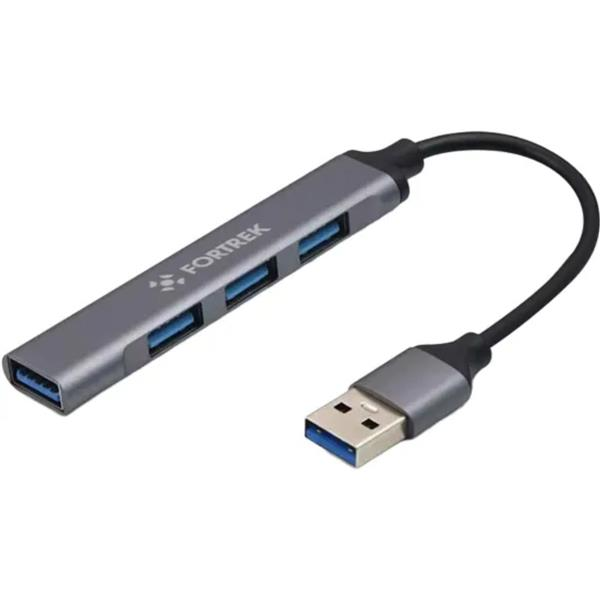

O Hub USB Type A 4 Portas FORTREK DA41 é um hub com quatro portas USB Type A, fabricado em alumínio com cabo em PVC. Possui design compacto — 9 x 1,7 x 0,7 cm — e cabo curto de 14,5 cm, ideal para conectar múltiplos periféricos com mobilidade.